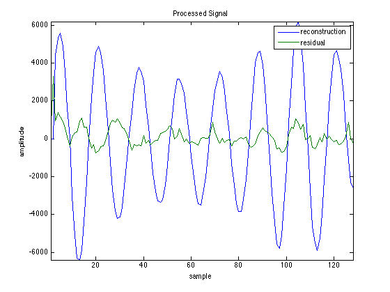
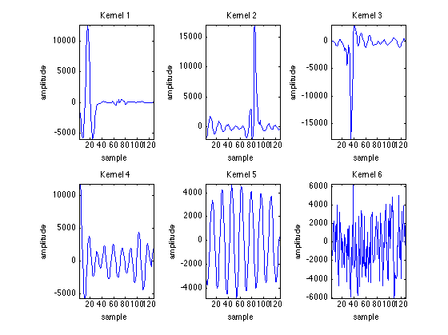

Worklog 25 April 2013
mpLib
- Ran impulse test on fixed point
mpLib.
Result: looking pretty good.
Fixed-point impulse test results
The result form the impulse test run shows that the algorithm can reconstruct the signal and also reduce noise. In the example a three second, sampling frequency 1000 Hz, long sine signal was polluted by irregular impulses of the mexican hat shape and low amplitude noise. The sine wave was also enveloped in a morlet waveform to produce regular variations. This was run through the fixed-point C implementation of the matching pursuit algorithm using six kernels and a kernel length of 128 samples.


The six kernels manage to capture the core of input signal. There is defintely a harmonic look to kernel four and five while kernel one through three contains pronounced spikes and little else. It also appears that in this test run kernel six was left unused. Since the input signal contains three types of waves interposed only three kernels should be needed, however, the over completeness of the kernel basis is what allows for a more sparse encoding.